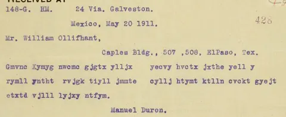
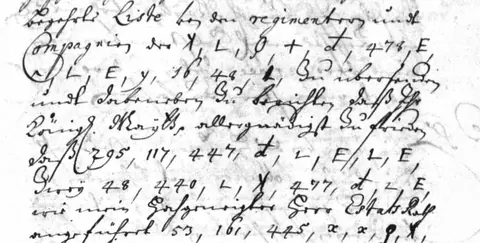
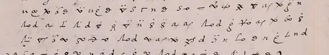
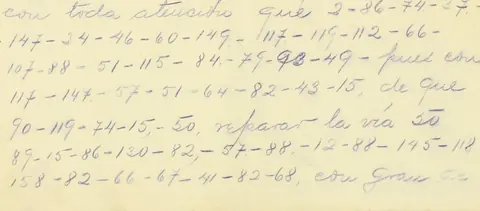
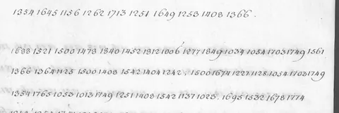
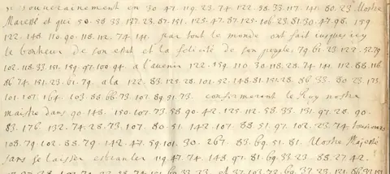
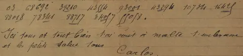
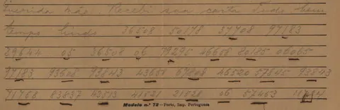
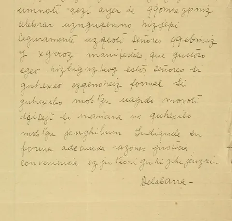
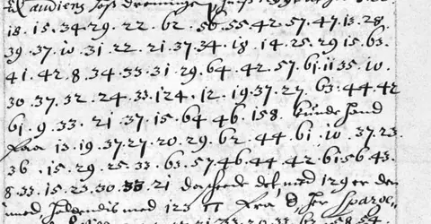

10 to start with
The highest-priority ciphers that can be tried from a desk and already have a page photographed here. Each picture is a crop from the work on that cipher or on a piece of the same series; its source is credited on the linked pages.

9.01911–14AMaderista junta at El Paso: telegrams "texto en clave" that the catalogue leaves undeciphered, among hundreds deciphered at the timeCEHM-Carso · no. 1462
8.41675–76BConrad Biermann's copybook, 1675: letters outside key K55Rigsarkivet · no. 465
8.41546–53APrince Philip → Ferrante Gonzaga, three Spanish letters partly in cipher, decoded with the Imperial Cipher table but not read (25 Jun 1546, 14 Mar 1553, and one catalogued 16 Jun 1563)Estense, Modena · no. 1561
8.01913–18AFederal (Huertista) army telegrams "en clave" in Gen. Guillermo Rubio Navarrete's papers: Lampazos, Monterrey, Laredo, ZacatecasCEHM-Carso · no. 1468
7.51739–41AHopken and Carlson's despatches from Constantinople to the King, 1739-41: heavy numeric cipher, much of it apparently unsolvedRiksarkivet · no. 1771
7.41674–78BEnvoy Carl Bonde (and Lillieroot) at Paris: Swedish despatches in a 2-3 digit code, partly glossed, with bare pages remaining (images 327-330 and 114 left; the memorial of 1676 and one despatch of 1677 read in part)Riksarkivet · no. 2317
6.51903CKing Carlos I → Queen Amélia, code telegram of 5 Mar 1903 (yacht Amélia, Oran), no decodeTorre do Tombo · no. 401
6.51910CKing Manuel II → Queen Amélia, letters and telegrams, some in cipherTorre do Tombo · no. 408
6.51911–13AFrancisco León de la Barra papers: the coded 1911 letter with person numbers, and the clear telegram of Nov 1913CEHM-Carso · no. 1463
6.51647APeder Juel (Danish resident in Stockholm): register of his outgoing letters, the entry to Hannibal Sehested of 20 Nov 1647 (p. 6) in a 3-32 set of numbers, no deciphermentRigsarkivet · no. 2553The ciphers
| Priority | Year | Cipher | Where | Class |
|---|---|---|---|---|
| 9.0 | 1911–14no. 1462 | ● Maderista junta at El Paso: telegrams "texto en clave" that the catalogue leaves undeciphered, among hundreds deciphered at the timeattempted, openCommand traffic of the Madero revolution in its decisive weeks (Ojinaga, Agua Prieta, the armistice and the taking of Ciudad Juárez, May 1911); 1914 items are Villa-era Chihuahua. | CEHM-CarsoCEHM-Carso, Fondo CMXV (Archivo Federico González Garza), undeciphered: CMXV.14.1354.1, 1420.5-6, 1420.6-6, 15.1430.3-3, 1432.3-4, 15.1447.1-3, 1561.10-13, 17.1648.2-3; partly read: 16.1561.12-13, 17.1695.1-2, 1695.2-2, 18.1770.1-4; 1914: 31.3092.3-6, 34.3344.1 (to Villa), 35.3433.1-2 (to Fidel Ávila, "Plan Irapuato"), 35.3464.1 (to Carvajal), 35.3492.2-3CEHM CMXV.16.1557.1 (21 keys) | A |
| 8.4 | 1764no. 450 | ● Düben to Queen Lovisa Ulrika, system B ('Chiffer n:o 2'), 1764in progresskey in volumeThe queen's private cipher channel during the 1764-66 Hat/Cap crisis and her dealings with Russia and Prussia; the keys sit in the same volume, so it should read quickly. | RiksarkivetRiksarkivet, Kungliga arkiv, Drottning Lovisa Ulrika, Utgångna skrivelser, SE/RA/710003/02/008/b/K 259, images 118-124NAD record | A |
| 8.4 | 1675–76no. 465 | ● Conrad Biermann's copybook, 1675: letters outside key K55in progresskey heldDanish foreign policy at the start of the Scanian War (Gottorp, France, Sweden, Niels Brahe's mission) in the chancery's own outgoing ciphers; clear context and probable keys online. | RigsarkivetRigsarkivet, Tyske Kancelli, Udenrigske Afdeling, Almindelig del, "Conrad Biermanns kopibog over udgående skrivelser til danske ministre i udlandet" 1675 (Daisy heid 2130515, unit S-1418)Daisy series | B |
| 8.4 | 1539–57no. 1556 | ● Cardinal Ercole Gonzaga → Ferrante Gonzaga, two letters with cipher (one sheet entirely in cipher)in progressErcole's private political line to his brother; a full ciphered sheet plus deciphered siblings in the same file is the ideal set-up for a key rebuild. | Estense, ModenaBiblioteca Estense Universitaria, Modena, Autografoteca Campori, Lettera G, Gonzaga, Ercole (cardinale), sfasc. III, cc. 77-79 and cc. 174-175cc. 77-79 | A |
| 8.4 | 1546–53no. 1561 | ● Prince Philip → Ferrante Gonzaga, three Spanish letters partly in cipher, decoded with the Imperial Cipher table but not read (25 Jun 1546, 14 Mar 1553, and one catalogued 16 Jun 1563)in progressPhilip's own ciphered correspondence with the governor of Milan during his regency and the 1548-51 'felicísimo viaje'; deciphered siblings in the same file. | Estense, ModenaBiblioteca Estense Universitaria, Modena, Autografoteca Campori: Lettera F, Felipe II, rey de España, sfasc. II, cc. 5-6; Lettera F, Felipe II, rey de España, sfasc. I, cc. 35-40; Lettera F, Felipe II, rey de España, sfasc. II, cc. 24-2525-06-1546 record | A |
| 8.4 | 1764–65no. 1616 | ● Lovisa Ulrika correspondence, system A: 6 Mar 1764 and the glossed letter of 15 Nov 1765openkey heldThe queen's private cipher channel during the 1764-66 Hat/Cap crisis and her dealings with Russia and Prussia; the keys sit in the same volume, so it should read quickly. | RiksarkivetRiksarkivet, Kungliga arkiv, Drottning Lovisa Ulrika, Utgångna skrivelser, SE/RA/710003/02/008/b/K 259, images 101-102, 124-126NAD record | A |
| 8.4 | 1482no. 2350 | ● Bernardo Rucellai, Florentine orator in Milan, July-September 1482: four bare letters in his sign cipher, with three glossed siblings in the same filzain progresskey in volumekey heldA run of cipher despatches from Milan in the War of Ferrara (1482), with three glossed letters of the same system beside them: a key can be rebuilt and the four bare letters (and lead 2323) read. | AS FirenzeArchivio di Stato di Firenze, Mediceo avanti il Principato, filza LXXII, docs. 196, 200, 202, 206MAP filza 72, doc. 196 | A |
| 8.4 | 1515no. 2393 | ● Francesco Pandolfini, Florentine orator, to the Otto di Pratica, September 1515 (contemporary copy): about 60 lines of sign cipher in a two-leaf letter, bareopenkey heldA long cipher despatch from the weeks before Marignano (13-14 Sept 1515). Pandolfini's 1514-15 French embassy cipher (catalogue: LXXII rows, superscript-index system) has plaintext pairs in LXXII 281-368: a direct key test. | AS FirenzeArchivio di Stato di Firenze, Mediceo avanti il Principato, filza CXXXVII, doc. 666 (cc. 674-674 bis)MAP filza 137, doc. 666 | A |
| 8.0 | 1864–65no. 681 | ● Richard Taylor's telegram letter-books 1865 (NARA RG 109 ch. II vols. 196, 11, 10): the cipher telegrams still unread and not in the Official Recordsin progresskey heldA set of Confederate field ciphers from the last months of the war (Mobile campaign, Wilson's raid) that a known key reads, with the clear sense of each telegram in the same book: a quick, verifiable reading and a test set for Confederate key usage (which key, and when the change was made). | NARANARA RG 109, War Department Collection of Confederate Records, Chapter II vols. 10, 11 and 196 (Telegrams Sent, Department of Alabama, Mississippi and East Louisiana, 1864-1865)Vol. 196, Telegrams Sent Feb-Mar 1865 (NARA 45485022) | A |
| 8.0 | 1913–18no. 1468 | ● Federal (Huertista) army telegrams "en clave" in Gen. Guillermo Rubio Navarrete's papers: Lampazos, Monterrey, Laredo, Zacatecasin progressFederal army operations against Pablo González and Carranza in the Northeast (Lampazos, Candela, Cañón de Sabinas, Nov 1913) and the defence of Zacatecas before June 1914; Huerta-side cipher is rarely seen. | CEHM-CarsoCEHM-Carso, Fondo DLXXIII (Manuscritos del General Guillermo Rubio Navarrete), DLXXIII.1.29.11-30, 1.29.12-30, 1.30.5-49, 1.30.15-49 (clave núm. 10, Lampazos 10 Jul 1913), 1.30.17-49 (transcribes in cipher an order of President Huerta, 19 Jul 1913), 1.30.27-49, 1.31.29-30, 1.32.3-41, 1.32.5-41, 1.32.6-41, 1.32.21-41, 2.41.1-41, 2.41.17-41, 2.41.18-41, 2.41.19-41, 2.41.22-41, 2.41.23-41; 2.41.39-41 to 41-41 (Jan 1918)CEHM DLXXIII.1.30.17-49 (Huerta order) | A |
| 8.0 | 1819no. 1523 | ● Luis López Méndez (London) → Simón Bolívar, letter on the Gambier expedition, part in a secret keyin progressThe independence agents' cipher between London and Angostura in the year of Boyacá; a key here would be the earliest Gran Colombian diplomatic cipher, and a possible ancestor of Revenga's 1822 London-Madrid key (targets/revenga1822). | AGN ColombiaArchivo General de la Nación (Bogotá), Sección Archivo Anexo, Grupo I, Historia, HISTORIA.SAA-I.17,25,D.24DataViva record | C |
| 8.0 | 1932no. 1526 | ● Jefatura civil y militar del Amazonas (Gen. Amadeo Rodríguez Vergara): the numeric cipher telegram No. 143 of the Leticia crisis, and the cipher telegrams of the neighbouring unitsattempted, openkey in volumeColombian military cipher of the Leticia war (Colombia-Peru 1932-33), with the key sheet in the same private archive and images online. | AGN ColombiaArchivo General de la Nación (Bogotá), Archivos Privados, Fondo General Amadeo Rodríguez Vergara, Asuntos militares, CO.AGN.AP.GARV..2.2.4DataViva GARV 2.2.4 | A |
| 8.0 | 1646no. 2354 | ● Archduchess Claudia de' Medici to Ottavio Piccolomini, Innsbruck 1646: two letters with cipher passages and no interlinear deciphermentin progresskey in volumekey heldThe regent of Tyrol writing in cipher to the imperial field marshal in the last campaign years before Westphalia (Münster negotiations, Spanish and Dutch talks are in the glossed siblings). | SOA ZámrskSOA Zámrsk, Rodinný archiv Piccolominiů (Náchod), inv. č. 24793 and 24800 (microfilm frames labelled "31/2")Vlnas 2017 thesis (text + appendix zip of the photographs) | B |
| 7.9 | 1680no. 1599 | ● Emperor Leopold I → Charles II of Spain: autograph cipher letter from Praguein progressA ruler's own cipher letter inside the Habsburg family, after Nijmegen. | BNE MadridBNE, RES/261/58BNE card | C |
| 7.7 | 1450no. 2630 | ● Sforza chancery letters in cipher, ASMi Carteggio Sforzesco cart. 1598, sign family C (9 records)openkey in volumeSecond half of the unread Sforza cipher pool; clear decipherments filed with it would make key recovery likely. | AS MilanoArchivio di Stato di Milano, Carteggio Visconteo-Sforzesco, cart. 1598 (cart. 1591 where marked), nos. 28, 29, 30, 31, 32, 40, 41, 43, 44 (DECODE R5502, R5503, R5504, R5505, R5506, R5514, R5515, R5517, R5518)DECODE R5502 | A |
| 7.5 | 1605–20no. 566 | ◇ Count Willem Lodewijk of Nassau-Dillenburg (stadtholder of Friesland) ↔ his brothers Johann VII and Georg, correspondence mostly in cipher (the letters other than the four 1620 pieces deciphered in targets/nassau1620)attempted, openPrivate channel of the Orange-Nassau military reformers during the Twelve Years' Truce and the Jülich crisis. | HHStA WiesbadenHessisches Hauptstaatsarchiv Wiesbaden, Abt. 171 Nr. S 995 (keys: Abt. 171 Nr. C 667, K 569, Z 1807)171 S 995 | A |
| 7.5 | 1739–41no. 1771 | ● Hopken and Carlson's despatches from Constantinople to the King, 1739-41: heavy numeric cipher, much of it apparently unsolvedin progressThe densest cipher volume seen in the sweep: Sweden-Ottoman alliance diplomacy on the eve of the 1741 war with Russia. | RiksarkivetRiksarkivet, Diplomatica Turcica, SE/RA/2119/2119.1/I/9/21 (Brev till Kungl. Maj:t, 1739-1741)NAD record | A |
| 7.5 | 1520–21no. 2395 | ● Cardinal Giulio de' Medici (the future Clement VII) to Galeotto de' Medici in Rome, May 1520/21: two letters wholly in two different sign ciphers, bareopenOutgoing cipher of Cardinal Giulio, who ran Florence and the Medici foreign policy for Leo X, to the family's orator in Rome, in the year of the imperial alliance (May 1521). About 55 lines in two systems, enough for a ciphertext-only attack on each; 734 is a plain-looking simple-substitution alphabet of about 20 signs. | AS FirenzeArchivio di Stato di Firenze, Mediceo avanti il Principato, filza CXXXVII, docs. 733 (c. 741) and 734 (c. 742)MAP filza 137, doc. 733 | A |
| 7.5 | 1837no. 2425 | ● Conde de Alcudia (Vienna) to the Carlist Secretaries of State Sierra and Arias Teijeiro: twelve letters, several wholly in letter cipher, tens of pagesopenkey in volumeBy far the largest ciphertext in the Carlist-war volumes of the Deposito de la Guerra: several thousand letters in one or two related monoalphabetic or nomenclator-light systems, with plain letters of the same date as cribs and the matching Carlist court context. A joint attack with N.2 and N.5 (same correspondents' office) could give one key for a whole file. | AHN MadridMadrid, AHN, DIVERSOS-COLECCIONES,161,N.1 (PARES 3735700)PARES description (DIVERSOS-COLECCIONES,161,N.1) | A |
| 7.5 | 1486no. 2554 | ● Piero Capponi, Florentine commissario with the League army, to Lorenzo de' Medici, 22 Jun 1486: letter largely in sign cipher, bare (MAP XLIII doc. 8)openThe Florentine commissario's secret reports from the papal-war camp in summer 1486, the climax of the Barons' War; the glossed sisters show the content is military and diplomatic. | AS FirenzeArchivio di Stato di Firenze, Mediceo avanti il Principato, filza XLIII, doc. 8 (cc. 18r-19v)MAP filza XLIII doc. 8 (viewer) | A |
| 7.5 | 1896–1900no. 2646 | ● Mabeyn to Yemen, system B: 21 telegrams in two-digit numerals with the clerk's Arabic letters over them, 1896(?)-1900 (HPBK, Hilmi Pasa collection)openkey in volumeMany sheets of one numeral system with the clerk's own letter-by-letter reading on the page: a ready training set for the numeral-to-letter mapping, and clear sheets of the same days for 575 and (in 2577) 576, 578, 599. | printed edition onlyKoc University (Istanbul), Hilmi Pasa Belgeleri Koleksiyonu (CONTENTdm HPBK), items 495, 498, 518, 524, 527, 536, 541, 546, 562, 575, 577, 580, 583, 585, 587, 602, 623, 644, 652, 675, 1761HPBK item 495 | A |
| 7.5 | 1584no. 2839 | ● Hautefort to Bellievre (Grenoble, March 1584): cipher letters with a clear closing, BnF fr. 15567 ff. 158-164openkey heldSix or more pages of cipher from one hand with a table reconstructed in print: the largest unread block of these volumes. | BnFBnF, Manuscrits, Francais 15567 ff. 158-164 (Gallica ark btv1b90639282, views 164-170)Gallica fr. 15567 | A |
| 7.5 | 1584no. 2841 | ● Letter in Hautefort's cipher (per Tomokiyo), two full pages of cipher, BnF fr. 15568 ff. 207-208openkey heldTwo full pages in a cipher whose table is reconstructed on Tomokiyo's page: a direct test of that table. | BnFBnF, Manuscrits, Francais 15568 ff. 207-208 (Gallica ark btv1b9063927n, views 215-216)Gallica fr. 15568 | A |
| 7.5 | 1439no. 2946 | ● Gianfrancesco Gonzaga, Marquis of Mantua, to Cosimo de' Medici, 'Sablo', 24 Jan 1439: about 18 lines of cipher mixed with Italianopenkey in volumeA Gonzaga-Medici letter of the 1439 war, readable in principle by rebuilding the key from its deciphered sibling in the same filza. | AS FirenzeASF, Mediceo avanti il Principato, filza XI, c. 215ASF IIIF image 432 | A |
| 7.4 | 1798–1802no. 1533 | ● Harford Jones (Baghdad) code: Jones → Dundas 1798 with clear copy, and two informant letters from Erzeroum 1801-02openAn East India Company informant's reports on the Russian advance into Georgia and the disputed Armenian Catholicos election at Etchmiadzin, 1801-02 | British LibraryBritish Library, IOR/L/PS/9/76/49, /51, /212, /217QDL IOR/L/PS/9/76/212 | A |
| 7.4 | 1630–47no. 1567 | ● Francesco I d'Este (letters countersigned by Fulvio Testi) → Ottavio Bolognesi, Paolo Francesco Forni and Francesco Ottonelli, partly in cipher (two deciphered)openModenese diplomacy in the Mantuan succession war (1630) and the 1630s-40s, with cipher and deciphered siblings, and the reply of an agent in the same cipher. | Estense, ModenaBiblioteca Estense Universitaria, Modena, Autografoteca Campori: Lettera T, Testi, Fulvio, cc. 7-8; Lettera T, Testi, Fulvio, cc. 9-10; Lettera T, Testi, Fulvio, cc. 11-12; Lettera T, Testi, Fulvio, cc. 16-17; Lettera T, Testi, Fulvio, cc. 20-21; Lettera T, Testi, Fulvio, cc. 22-24; Lettera T, Testi, Fulvio, cc. 13-15; Lettera F, Francesco I, duca di Modena, cc. 73-74; Lettera F, Francesco I, duca di Modena, c. 53; Lettera F, Francesco I, duca di Modena, c. 72; Lettera F, Francesco I, duca di Modena, c. 54; Lettera F, Francesco I, duca di Modena, c. 4; Lettera F, Francesco I, duca di Modena, cc. 5-607-02-1630 record | A |
| 7.4 | 1757–71no. 1580 | ● Letters to Father Betański, partly in cipher: some solved between the lines, some notattempted, openkey in volumeInterlinear siblings give a key directly, which may read the unsolved letters and the Branicki family ciphers. | AGAD WarsawAGAD, zesp. 338, 1/338/0/1/128, 130, 143 (no decipherment noted); 131 read in part (targets/agad131/); siblings 129, 132-136, 138, 140-142 (solved)no. 28223835 | A |
| 7.4 | 1686–89no. 1773 | ● Simon Dorffler's despatches from Poland to the King, 1686-89: numeric cipher between the lines, marginal summaries onlyopenClear German context around each numeric run gives cribs; Swedish diplomacy at the Polish court under John III Sobieski. | RiksarkivetRiksarkivet, Diplomatica Polonica, SE/RA/2115/I/19/102 (Brev till Kungl. Maj:t, 1686-1689)NAD record | A |
| 7.4 | 1742no. 2244 | ● Höpken and Carlson (Constantinople) to the chancery president, 1742: French and Swedish passages in four-digit code with interlinear plaintextattempted, openkey in volumeThe last Höpken-Carlson volume (1742, after the Swedish defeat in Finland): the Ottoman side of the Hat government's foreign policy, with plaintext cribs for every passage. | RiksarkivetRiksarkivet, Diplomatica Turcica, SE/RA/2119/2119.1/I/9/28 (Brev till kanslipresidenten, 1742)NAD record | A |
| 7.4 | 1741no. 2247 | ● Höpken and Carlson (Constantinople) to the chancery president, Jan-Jun 1741: four-digit code passages with interlinear plaintextattempted, openkey in volumekey heldSweden-Ottoman diplomacy in the run-up to the 1741 Russo-Swedish war; one more slice of the same code with plaintext cribs. | RiksarkivetRiksarkivet, Diplomatica Turcica, SE/RA/2119/2119.1/I/9/26 (Brev till kanslipresidenten, 1741 - )NAD record | A |

Numbers that have left the catalogue 262
If a number you were given is not in the list, it is here. +1 marks a number split between write-ups; a piece still open stays in the list under its number. Hover a number for its write-ups and the day each landed.
Read with known key 66
- 5 Nicolas Raince → Montmorency
- 6 Jean de Langeac +3
- 8 Sormano and de Vaulx → François I
- 11 Catherine de Médicis and the Court → Bernardin Bochetel
- 16 A. Pelissier → Pierre Jeannin
- 18 Lebel → Charles Emmanuel I of Savoy
- 20 Baudouin-Desportes → Pietro Aldobrandini and → Girolamo…
- 21 Nevers → Louis de Revol +1
- 29 Cardinal Pellevé's secretary → Jean de Piles
- 42 Conde de Hernán Núñez
- 47 János Pápai → Ferenc Rákóczi II
- 50 János Pápai → Ferenc Rákóczi II
- 59 Henrietta Maria's household +3
- 63 Sir Ralph Boswell → his cousin William Boswell
- 68 Count Leopold Viktorin von Windischgrätz
- 69 Charles VI → Count Leopold Viktorin Windischgrätz +1
- 83 Sir Nicholas Throckmorton
- 89 Sir Thomas Smith → Cecil and Elizabeth I
- 90 Sir Henry Norreys
- 94 Sir Thomas Smith → Cecil and Elizabeth I
- 147 Alonso Sánchez
- 168 Pseudo-Johann Arndt
- 171 Henri
- 172 Henri
- 173 Catherine de Médicis
- 176 Ambrogio Bizozola → Maximilian Sforza
- 177 Galeazzo Visconti
- 178 Georges de Selve
- 179 Galeazzo Visconti → Angelo Bolano
- 180 Charles Hémard de Denonville +1
- 188 Vincenzo I Gonzaga
- 194 Unknown writer
- 195 Cardinal Lorenzo Campeggio → Francis I
- 196 Cardinal Marino Ascanio Caracciolo
- 201 Diego López de Ayala
- 208 Sigismund Heusner von Wandersleben
- 209 Sigismund Heusner von Wandersleben
- 217 Arend Willem van Reede
- 221 An Orangist correspondent
- 222 Wolff
- 229 Cornelis Haga
- 235 Scribe's colophon of the Dominican sequentiary Uppsala…
- 238 Unsigned cipher slip
- 240 Filippo Acciaiuoli
- 242 Paris nunciature
- 243 Gian Francesco Morosini +1
- 246 Cesare Alberico Lucini
- 249 Segreteria di Stato
- 251 Segreteria di Stato
- 253 Cardinal Alessandrino
- 254 Cardinal Alessandrino
- 261 Cardinal Alessandrino
- 267 Pál Bornemisza
- 287 Isabella of Castile → the Duke of Estrada
- 291 Jo. Antonio Bilia → Francesco II Sforza
- 439 Ludwik Wąsowicz
- 541 Partyet
- 617 Rodrigo González de Puebla
- 638 Alexander H. Everett
- 751 Marshal Jourdan
- 763 Alexander Graham Bell → Mabel Hubbard Bell
- 1309 Contucio
- 1488 João Goulart
- 2236 The Imperial War Council
- 2351 Roberto Acciaiuoli
- 2533 A letter and a note in Johan van Ewsum's register
Key recovered from ciphertext-only 57
- 7 Hieronimo Ranzo's code: the letter to "Garbino" +1
- 10 Claude de La Guiche +2
- 12 Saint-Luc +5
- 28 Charles of Egmond → grand master of France
- 39 Gottfried van Swieten +1
- 45 Ferenc Wesselényi
- 56 Unknown writer → "Monsieur"
- 130 Sir Simonds D'Ewes
- 140 Thomas Edmondes
- 149 Lope de Soria → Charles V +1
- 151 Rodrigo Niño → Charles V
- 152 Unnamed Gonzaga agent +3
- 153 Unknown writer → Hesse-Kassel
- 161 An informant at Ernst of Bavaria's court → Duke Wilhelm… +7
- 165 Ferdinand of Bavaria
- 170 Hieronimo Ranzo's code: the letter to "Garbino"
- 181 Guido Rangone
- 189 Hieronimo Ranzo's code: the letter to "Garbino"
- 190 Two Sforza letters of 4 May 1446
- 191 Louis XIII → Melchior de Sabran and Sabran → Bouthillier +1
- 216 Johann Heinrich Kauderbach
- 220 An Orange prince
- 276 Unknown Catholic gentleman of the Agenais → the…
- 281 Giovan Gioacchino da Passano
- 298 Niccolò Guidi di Bagno
- 310 Louis XIII → Melchior de Sabran and Sabran → Bouthillier
- 321 Matheo de Segura → Constable of Castile
- 333 A Vienna agent +4
- 338 Otto von der Malsburg
- 391 Afonso VI
- 443 Anonymous letter
- 480 James C. Mountflorence → the Secretary of State
- 485 Francis Dana
- 626 Lope Hurtado de Mendoza → Charles V
- 757 US Consul-General Auckland ↔ Naval Commander San…
- 1464 Venustiano Carranza
- 1466 Report to an officer
- 1560 Emperor Charles V +2
- 1562 Lope de Soria
- 1564 Pier Maria Rossi di San Secondo → Ferrante Gonzaga +1
- 1570 Vittoria Gonzaga
- 1578 Jan Klemens Branicki
- 1579 Unknown writer among the Polish exiles → a man +1
- 1581 "Dahka"
- 1645 Wilhelm von Fürstenberg
- 2049 Aaron Burr → Joseph Alston +1
- 2159 Ercole II d'Este → Claudio Ariosto
- 2164 Alfonso II del Carretto
- 2176 “Francesco Rota”
- 2322 Unsigned letter "De Spagna" → Lorenzo de' Medici
- 2348 Anonymous
- 2421 Manuel Azuares
- 2423 Juan Van Halen
- 2444 Bernardo Taulet
- 2525 “Kloge Søren”
- 2540 Johan Zobel
- 2649 Sir Harford Jones
Key recovered based on adjacent plaintext 56
- 1 Mondoucet → Charles IX
- 3 Lanssac → Charles IX
- 22 Henri IV → Béthune +1
- 26 Prince de Conti → Geoffroy +1
- 33 García de Toledo → Philip II
- 38 Marqués del Carpio
- 67 Ferdinand Sigmund Kurz von Senftenau
- 81 Edward Wotton
- 100 Thomas Spinelly
- 117 Sir Edward Stafford
- 119 Sir Edward Stafford
- 132 Henry Brooke
- 133 Francis Needham
- 144 Lope Hurtado de Mendoza
- 148 Lope Hurtado de Mendoza
- 154 Nicolò Sadoleto → Ercole I d'Este
- 162 Hieronymus Łaski and King John Zápolya → the Dukes of… +2
- 163 King John Zápolya and an agent at Buda → the dukes of…
- 164 Jörg Weinmeister
- 183 Joachim de Dinteville
- 186 Paris informant
- 187 Court informant → Louis de Gonzague
- 210 Andreae
- 211 Comte d'Affry
- 340 Snell → an unidentified correspondent
- 380 João IV → Vasco Luís da Gama
- 417 Antoni Augustyn Deboli
- 418 Antoni Augustyn Deboli
- 481 William Vans Murray → James Madison
- 483 Jefferson's Code No. 11
- 498 Niccolò Ferducci
- 539 Pierre-Antoine de Castagnères
- 542 Le Vassor de La Touche and Le Mercier de La Rivière →…
- 569 Georg Ernst zu Erbach → Landgrave Ludwig VI of…
- 599 Charles XII → the Council of the Realm
- 715 Japanese Army General Staff
- 758 L. A. Guajardo
- 818 Thomas Fossey's notebook of veterinary recipes
- 826 British agent at Port Sainte-Marie
- 855 Pedro Pacheco
- 857 Ferdinand of Aragon
- 1201 Jacau de Fiedmond
- 1203 Marquis de Bouillé → the Navy minister
- 1392 Charles-François Pichot de Querdisien Trémais → the…
- 1447 Bernardo Reyes
- 1448 José López Portillo y Rojas
- 1470 Cipher telegrams to Setembrino de Carvalho
- 1588 Officials and citizens of the Smolensk palatinate
- 1601 Antonio Dávila y Zúñiga
- 2355 A writer who signs in cipher → Ottavio Piccolomini
- 2356 A Spanish officer → Ottavio Piccolomini
- 2520 Christoffer Sehested +1
- 2527 Peder Vibe +2
- 2528 Christian V of Denmark
- 2882 Ibn al-Qabāqibī → the unnamed compiler of a Mamluk book…
- 2954 Bernardo d'Alamanno de' Medici
Read from existing decipherment 44
- 4 Jean du Bellay → Montmorency +1
- 14 Anonymous figure cipher → a League leader
- 23 Henri IV → François Savary de Brèves
- 32 Philip II → Mendoza
- 34 Charles IX → Philibert du Croc in Scotland
- 37 Bernardo de Salinas
- 40 Marqués de los Balbases
- 41 Bernardo de Salinas
- 49 Mihály Hentér → Ferenc Rákóczi II
- 84 Mary Queen of Scots
- 86 Queen Anne → Charles Mordaunt
- 88 Nicholas Throckmorton → Cecil
- 99 Thomas Randolph
- 111 Girolamo Ghinucci
- 118 Sir Edward Stafford
- 150 Charles de Poupet
- 159 Beatrice d'Aragona → Eleonora d'Aragona
- 160 Beatrice d'Aragona → Eleonora d'Aragona +2
- 167 Castelcicala → Marchese di Circello and Cavaliere de'…
- 197 Francisco de Vargas
- 215 Frederick II → Louis Michell
- 228 Etienne Bourdeaux
- 232 C. A. graaf van Rechteren tot Borgbeuningen
- 237 Giovanni Battista Pallotto
- 244 The Cardinal of Como +1
- 245 Prospero Santa Croce
- 248 Cardinal Francesco Barberini
- 260 Antonio Sauli and Cardinal Riario
- 264 Alvise Mocenigo +1
- 265 Sebastiano Foscarini
- 266 Alvise Mocenigo
- 283 Henriette de Clèves
- 290 Cardinal Matthäus Schiner → Henry VIII
- 334 Benedict XIII → Francesc Climent +5
- 348 Wallachian court → a "Reverendissimus Pater":…
- 409 Venceslau de Lima
- 420 Antoni Augustyn Deboli
- 484 Jefferson-era legation codes Nos. 10 and 13 +1
- 629 Gen. Joseph E. Johnston
- 630 Nisbet Balfour
- 636 Robert R. Livingston
- 645 Lt. Col. Thomas Jordan → "My Dearest Rachel"
- 646 Lt. Col. Thomas Jordan → "My Dearest Rachel"
- 653 Powhatan Ellis
Read after matching with key from external sources 26
- 25 Marie de Médicis → Savary de Brèves
- 30 Champagne news-letters → the duc de Nevers +2
- 44 "Ferenc Rákóczi II to unknown recipient": three French… +1
- 48 Philippe Groffey
- 51 András Bay → Ferenc Rákóczi II
- 52 László Vetési Kökényesdi
- 71 Charles I
- 120 Dr Nicholas Wotton
- 136 Robert Reade
- 146 Duke of Sessa
- 184 Louis de Gonzague
- 185 A correspondent at Randan
- 212 Prince Frederick of Orange
- 224 Johan Isaac de Swart
- 262 Cardinal Alessandro Farnese
- 341 Unidentified writer
- 346 London → Johann Georg von Ilten: unsigned letter of… +2
- 353 Duke of Ormond → his son the Earl of Arran
- 500 Henry II → Suleiman the Magnificent
- 639 Joel R. Poinsett
- 644 Rose O'Neal Greenhow
- 650 Anthony Morris
- 651 Joel R. Poinsett
- 762 Theodore Roosevelt → John Hay
- 1391 Pierre de Rigaud de Vaudreuil → the minister of the…
- 2309 Unsigned
Key recovered based on plaintext from external sources 13
- 17 Henri IV → André Hurault de Maisse +1
- 82 Sir Francis Walsingham → Edward Wotton
- 122 Burghley
- 263 Venetian ambassador at Rome → the Doge and Senate
- 271 Speculum cipher flyleaf
- 273 Hugo de Moncada
- 649 Charles Delacroix
- 725 Philip IV → Marquis of Santa Cruz
- 747 Philip IV → Cardinal Gil de Albornoz
- 755 Count of Siruela → Philip IV +1
- 1235 Maffeo da Treviglio → Tamás Bakócz
- 2307 Giovanni Mazzinghi and an unsigned writer
- 2320 Giovanni Mazzinghi and an unsigned writer
Where the ciphers are
The 2172 open entries are held by 194 archives, libraries and collections in 29 countries; 13 are known only from a printed edition and 127 sit in an archive not yet identified. Data: repositories.json.
2004 of the 2172 are drawn at the town of their archive, in 147 towns. A ring grows with the ciphers held there and follows the filters and the years chosen above; click one to list only its ciphers.
All 194 archives, by country
Click an archive to list its ciphers.
United States 643
NARA 509 · Beinecke, Yale 27 · Clements Library 15 · Huntington Library 11 · Marshall Foundation 9 · Morgan Library 7 · Chicago History Museum 3 · Duke University 3 · Houghton Library, Harvard 3 · Newberry Library 3 · Univ. of Virginia 3 · BYU 2 · Folger 2 · Lilly Library 2 · Massachusetts Hist. Soc. 2 · NYPL 2 · not yet identified (ArchiveGrid) 2 · UNC Chapel Hill 2 · Univ. of Chicago 2 · Lincoln Presidential Library 1 · Archives of Michigan 1 · Center for Brooklyn History 1 · Cleveland Public Library 1 · College of Physicians, Phila. 1 · Columbia RBML 1 · Connecticut Hist. Soc. 1 · Cornell University Library 1 · Detroit Public Library 1 · Haverford College 1 · Historic Newton 1 · Hist. Soc. of Pennsylvania 1 · Kentucky Historical Society 1 · Lehigh University 1 · Library of Virginia 1 · Middlebury College 1 · NSA 1 · New-York Hist. Soc. 1 · Ohio History Connection 1 · Philadelphia Museum of Art 1 · Rutgers University Libraries 1 · Stanford 1 · State Hist. Soc. of Iowa 1 · Temple University Libraries 1 · The Henry Ford 1 · UC Riverside 1 · US Army Heritage Center 1 · Penn Libraries 1 · Univ. of Rochester 1 · Univ. of South Carolina 1 · Virginia Tech 1 · Mount Vernon 1 · West Virginia & Regional History Center 1 · William & Mary Libraries 1
United Kingdom 309
TNA Kew 200 · British Library 53 · Bodleian 30 · NLS Edinburgh 7 · Hatfield House 3 · Wellcome Collection 3 · Devon Archives 2 · Lambeth Palace Library 2 · NRS Edinburgh 2 · PRONI 2 · Kresen Kernow 1 · Pepys Library, Cambridge 1 · Royal Museums Greenwich 1 · Senate House Library 1 · Staffordshire Record Office 1
France 196
SHD Vincennes 103 · BnF 34 · Archives nationales 15 · Institut de France 14 · ANOM 8 · Bibliothèque de la Sorbonne 5 · AMAE La Courneuve 3 · BIU Médecine Montpellier 3 · Chantilly, musée Condé 2 · BM Besançon 2 · Archives d'Alsace 1 · AD Seine-et-Marne 1 · AD Charente-Maritime 1 · AD Dordogne 1 · AD Savoie 1 · Bibliothèque Mazarine 1 · CADN Nantes 1
Italy 178
AS Firenze 79 · AS Milano 35 · AS Napoli 16 · Ambrosiana, Milan 13 · Estense, Modena 13 · AS Genova 4 · AS Modena 4 · AS Venezia 4 · BNCF Florence 3 · AS Torino 2 · Trivulziana, Milan 1 · Gregoriana archive, Rome 1 · AS Siena 1 · Biblioteca Reale 1 · Biblioteca civica Angelo Mai 1
Germany 154
GStA PK Berlin 17 · BayHStA Munich 14 · PAAA Berlin 13 · NLA Wolfenbüttel 12 · HStA Dresden 10 · HStA Darmstadt 8 · GLA Karlsruhe 6 · HStA Stuttgart 6 · HStA Marburg 5 · Bundesarchiv Freiburg 4 · HHStA Wiesbaden 4 · Hohenlohe-Zentralarchiv 4 · LAV NRW Westfalen 4 · LA Schleswig-Holstein 4 · Staatsarchiv Nürnberg 4 · Staatsarchiv Würzburg 4 · LAV NRW Rheinland 3 · Landesarchiv Sachsen-Anhalt 3 · Staatsbibliothek zu Berlin 3 · UB Leipzig 3 · Bayerische Staatsbibliothek 2 · LAV NRW OWL 2 · NLA Hannover 2 · Staatsarchiv Bamberg 2 · DLA Marbach 1 · Forschungsbibliothek Gotha 1 · UB Heidelberg 1 · Kreisarchiv Viersen 1 · StA Ludwigsburg 1 · StA Wertheim 1 · LB Schwerin 1 · Museum für Kommunikation 1 · NLA Oldenburg 1 · NLA Osnabrück 1 · NLA Stade 1 · SLUB Dresden 1 · Stadtarchiv Darmstadt 1 · Stadtarchiv Hildesheim 1 · Stadtarchiv Konstanz 1
Spain 119
RAH Madrid 55 · AGS Simancas 19 · Lope de Soria archive (location unconfirmed) 17 · BNE Madrid 11 · AHNOB Toledo 10 · AHN Madrid 3 · ACA Barcelona 2 · Archivo General de Indias 1 · Biblioteca Histórica, Madrid 1
Austria 106
HHStA Vienna 106
Portugal 51
Torre do Tombo 27 · BNP Lisbon 24
Netherlands 43
Nationaal Archief 16 · Koninklijk Huisarchief 11 · NL-04-0041 (unidentified) 5 · Gelders Archief 5 · Het Utrechts Archief 4 · KB The Hague 1 · RHCL Maastricht 1
Poland 37
AGAD Warsaw 27 · AN Kraków 8 · AP Lublin 1 · Archiwum Państwowe w Łodzi 1
Sweden 36
Riksarkivet 34 · National Library of Sweden 1 · Uppsala University Library 1
Hungary 31
Brazil 23
CPDOC/FGV 12 · NUPERGS Porto Alegre 10 · APESP São Paulo 1
Czechia 22
MZA Brno 9 · SOA Plzeň 7 · SOA Zámrsk 4 · Národní archiv 2
Chile 20
Mexico 15
CEHM-Carso 11 · AGN Mexico 4
Denmark 13
Rigsarkivet 10 · Royal Danish Library 3
Vatican City 9
BAV Vatican 7 · AAV Vatican 2
Australia 8
National Archives of Australia 7 · Australian War Memorial 1
Colombia 7
Belgium 2
Japan 2
JACAR 2
Romania 2
ANR Cluj 2
Switzerland 2
Indonesia 1
ANRI 1
Paraguay 1
Russia 1
Slovakia 1
Uruguay 1
No single archive 139
not yet identified 125 · printed edition only 13 · Private collections 1
How they were found
- 1193 archive and library cataloguessearches of national and regional archive portals, finding aids and library catalogues for letters described as in cipher
- 221 printed sourcescalendars of state papers, editions and the literature, mostly searched in full text on the Internet Archive and HathiTrust
- 43 DECODEthe database of historical cipher documents: the records it marks not decrypted or partly decrypted
- 15 BnF / Gallicathe French diplomatic volumes digitised on Gallica, where the catalogue began
- 11 Cryptooleopen items in Satoru’s Cryptoole index
- 685 WWI Cipher Repositoryopen messages listed by George Lasry in his WWI Cipher Repository
- 4 sent inreaders’ issues on GitHub and HCPortal
All 324 searches, with the entries each found
WWI Cipher Repository 685 · Internet Archive printed-sources sweep (non-English) 72 · Archivportal-D sweep 56 · Internet Archive full-text sweep 55 · HHStA AIS sweep (Nov 2026) 52 · DECODE 43 · ArchiveGrid sweep 37 · DECODE Venice/Milan sweep 34 · Arquivo Nacional Torre do Tombo (DigitArq) sweep 27 · Austrian State Archives (HHStA/FHKA) sweep 26 · Calames/Biblissima/FranceArchives sweep 24 · Beinecke sweep 22 · South Cone / Andes archives sweep 22 · Biblioteca Nacional de Portugal sweep 20 · NARA bulk-scan triage (slice E, RG 165/RG 65 cipher-word pass) 20 · NARA bulk-scan triage C sweep 20 · Polish archives sweep (AGAD inventories) 18 · TNA Discovery API, State Papers sweep 18 · Arcinsys sweep 15 · Internet Archive full-text sweep, pass 2b 15 · gda.bayern.de sweep 15 · Clements Library sweep 14 · FranceArchives / Archives nationales sweep 14 · Riksarkivet sweep 14 · ASF Mediceo del Principato, Carteggio universale (PAD images) + Carteggio universale di Cosimo I inventory PDFs (ASF Inventari on-line), second ASF Florence pass, Nov 2026 13 · Czech lands and Slovakia sweep (ARON portals, NA VadeMeCum), Nov 2026 13 · Milan archives sweep (Biblioteca Ambrosiana) 13 · Sweep D, Lang 2015 repertory 13 · Archivportal-D sweep (more terms) 12 · CPDOC/FGV sweep 12 · MNL AdatbazisokOnline sweep (G 15), 11 Nov 2026 12 · Swiss-Austrian-Bohemian portals sweep 12 · UK archives sweep (TNA Discovery) 12 · Archives Portal Europe sweep 11 · CEHM-Carso (Centro de Estudios de Historia de México, Fundación Carlos Slim) sweep 11 · Chrome pass, szukajwarchiwach 11 · Cryptoole 11 · Huntington Library sweep 11 · Marshall Foundation Friedman Collection sweep 11 · PARES (AGS) sweep 11 · ASF Mediceo avanti il Principato images (MAP filza paging), b169 backfill, Nov 2026 10 · Internet Archive pass-2 sweep (printed calendars) 10 · NUPERGS/UFRGS sweep 10 · TNA Discovery sweep 10 · Arxius en linia (arxiusenlinia.cultura.gencat.cat) JSON backend in Chrome, wave 7, 15 Nov 2026 9 · Biblioteca Estense (Lodovico Media Library) sweep 9 · OeNB Primo (search.onb.ac.at) in Chrome, continental blocked-sources pass, 15 Nov 2026 9 · US societies finding-aid sweep 9 · printed series sweep (archive.org full text) 9 · ASF Mediceo avanti il Principato (MAP) images, whole-filza paging pass, Nov 2026 8 · EMLO sweep 8 · Hungary/Czech sweep, MNL OL via Archives Portal Europe 8 · Kalliope sweep 8 · National Archives of Australia RecordSearch sweep 8 · AGN Colombia DataViva sweep 7 · Archivportal Thueringen (archive-in-thueringen.de), German state databases sweep, 14 Nov 2026 7 · Badator (artxibo.euskadi.eus, Archivo Historico de Euskadi) 'Exportar Busqueda' CSV of the search 'cifra' (1,892 records), run in Chrome 15 Nov 2026, wave 10; the records reproduce the Salazar y Castro index (RAH, 49 vols, 1949-79) 7 · Calendars and literature 7 · DARA (dara.aragon.es) results and item pages, fetched same-origin in Chrome, wave 8, 15 Nov 2026 7 · HathiTrust sweep 7 · NLS, Archives and Manuscripts Catalogue 7 · PARES sweep (AGS) 7 · Polish archives sweep (DECODE, Archiwum Narodowe w Krakowie) 7 · Sweep D, Riksarkivet IIIF volume pass, Nov 2026 7 · ARVAS (Virginia and West Virginia) sweep 6 · Austria and German state portals sweep (Landesarchiv NRW sufservice API, Saxon State Archives), 9 Nov 2026 6 · British Library catalogue sweep 6 · Internet Archive metadata sweep 6 · Landesarchiv BW sweep 6 · Mírka survey (Crypto-World 11-12/2012, 1-2/2013, 3-4/2013) and SNA inventories, Nov 2026 6 · Nationaal Archief sweep 6 · PARES sweep (AHNOB) 6 · archieven.nl sweep (OAI-PMH and site search, 11 Nov 2026) 6 · ASF MAP contact-sheet scan of filze V and XI (targets/pucci1438/scan_f05*.md, scan_f11*.md), 15 Nov 2026 5 · ASF Mediceo avanti il Principato (MAP) images, whole-filza paging pass 2 (CXXXVII docs 571-1058), Nov 2026 5 · Arabic sweep 15 Nov 2026 (part C) 5 · Arcinsys Niedersachsen sweep 5 · Gallica SRU in Chrome (arks), openapi.bnf.fr IIIF images viewed, 15 Nov 2026 (research/sweep_2026-11-15_gallica_omont_wave6/) 5 · NARA catalogue bulk-scan triage (RG 59 1906-1950) 5 · Undeciphered-phrases sweep (Hungaricana regests of the Vienna Hungarian files via Chrome; TNA Discovery API), 9 Nov 2026 5 · AGN México (Guía General) sweep 4 · ASTo online database (seal database and item-level inventories) + Archivi Nazionali search, Turin browser sweep, Nov 2026 4 · Archives nationales (FranceArchives sweep, 24 Oct 2026) 4 · BAV manuscripts OPAC (opac.vatlib.it/mss) item records + DigiVatLib IIIF, DigiVatLib sweep, Nov 2026 4 · Calames rest sweep (Godefroy supplement) 4 · NARA bulk-scan triage G (RG 242 / RG 94) 4 · NARA bulk_all triage (slice H) 4 · NARA bulk_all triage I 4 · Omont BnF catalogue sweep 4 · Rigsarkivet Arkivalieronline paging (TKUA Gesandtskabsrelationer, 17th century) 4 · Rigsarkivet Daisy sweep 4 · Sweep 2026-11 B unswept south (Manus Online / Wayback copies of Italian inventories) 4 · TNA Discovery API (item-level cipher sweep, 15 Nov 2026) 4 · archives-online.org federated search (Chrome), Austria/Swiss sweep, 15 Nov 2026 4 · ASF Mediceo avanti il Principato (MAP) images + MAP printed inventory (archive.org OCR vols 1-3, ASF page images vol. 4), ASF Florence sweep, Nov 2026 3 · ASF Mediceo del Principato, Carteggio universale (PAD images) + Carteggio universale di Cosimo I inventory PDFs (ASF Inventari on-line), ASF Florence sweep, Nov 2026 3 · Archives Hub sweep 3 · Archivio di Stato di Lucca, published inventory of Archivio Buonvisi, parte II 3 · Archivio di Stato di Venezia sweep 3 · Arsip Nasional Republik Indonesia sweep (cross-lead, Nationaal Archief) 3 · BNE/Hispana sweep 3 · Biblioteca Estense (Lodovico) sweep 3 · BnF Archives et manuscrits sweep 3 · Czech regional archives, Chrome pass (SOA Litoměřice, SOA Třeboň, ZA Opava, theses.cz), Nov 2026 3 · DPLA/Smithsonian sweep 3 · K. Jonas Nordby, Lønnruner (2018), individual object catalogue. 3 · Kalliope/DDB sweep 3 · New France Archives (nouvelle-france.org, LAC/ANOM) sweep 3 · Qatar Digital Library sweep 3 · Riksarkivet paging sweep 13 Nov 3 · Riksarkivet volume sweep (IIIF), Nov 2026 3 · Russia/Ottoman/Nordic sweep (Koç CONTENTdm via Europeana API), 14 Nov 2026 3 · ASF Mediceo avanti il Principato (MAP) images, second ASF Florence pass, Nov 2026 2 · Alvin OAI-PMH sweep 2 · Arcinsys Hessen sweep 2 · BnF harvest 2 · BnF italien (Archivio Sforzesco) via Mazzatinti 1887 2 · Brice Dudout's PARES sweep (28 Oct 2026) 2 · CARLI/UIC Chicago sweep 2 · Chrome pass, BNE Digital 2 · DARA (dara.aragon.es) results and item pages, fetched same-origin in Chrome, wave 9, 15 Nov 2026 2 · Europeana sweep 2 · Folger sweep 2 · FranceArchives sweep (24 Oct 2026) 2 · I. V. Nesterov, Shifrovannye knigi startsa Makariia, individual manuscript descriptions. 2 · I. V. Nesterov, survey of late Russian cryptography in Nizhny Novgorod collections. 2 · JACAR sweep 2 · Koç/Ottoman deep sweep, 14 Nov 2026 2 · Manus Online + BNCF Teca (wave 17 Chrome sweep) 2 · Milan archives sweep (Manus Online) 2 · NARA caps/word rerun triage L 2 · NARA catalogue sweep 2 · National Library of Wales archives catalogue (AtoM), via Chrome 2 · Omont et al., Catalogue general des manuscrits francais (Paris, 1895-1918), OCR at archive.org (NAF II/III/IV, Ancien Saint-Germain III, Anciens petits fonds I-III), 15 Nov 2026 2 · PRONI eCatalogue 2 · Riksarkivet western Diplomatica + Stedingk volume sweep (IIIF, Referer route), Nov 2026 2 · Riverbank sweep 2 · Royal Academy Salazar y Castro inventory and Badator export. 2 · Siblings sweep (Het Utrechts Archief Huis Amerongen via archieven.nl OAI-PMH oai_ead), 9 Nov 2026 2 · Spain nobility / ACA sweep (PARES, AHN Diversos-Colecciones), 9 Nov 2026 2 · Tresoar's own archives site (archieven.tresoar.nl, open JSON API /api/search), 14 Nov 2026 2 · UK libraries sweep (NRS) 2 · Vatican sweep 2 · Wave 15 libraries sweep, 15 Nov 2026 (soeg.kb.dk Primo API; archiv.sachsen.de finding-aid search) 2 · Weber, Masked Dispatches (NSA) sweep 2 · Wikisource/Commons sweep 2 · Yale finding aids sweep 2 · archieven.nl OAI-PMH (harvest.archieven.nl, oai_ead), Dutch regional archives, rest-of-sets harvest, 14 Nov 2026 2 · archives-online.org (Chrome), French Swiss pass, 15 Nov 2026 2 · cryptiana fine print 2 · davel.vd.ch DAVEL (Chrome fetch), French Swiss pass, 15 Nov 2026 2 · APESP sweep 1 · ASF Mediceo avanti il Principato (MAP) images + archive.org OCR of the MAP inventory, Italian state archives retry, Nov 2026 1 · ASF Mediceo avanti il Principato images (MAP filza XLIV paging), b174 backfill, Nov 2026 1 · ASF Mediceo avanti il Principato images (MAP filza XXXVIII paging), map_paging sweep, 13 Nov 2026 1 · ASF Mediceo del Principato, Carteggio universale (PAD images) + Carteggio universale inventory PDFs, b169 backfill, Nov 2026 1 · Abrahamyan and Shahinyan, study of the Artsvanik cross-stone and its inscriptions, pp. 124–125. 1 · Academy inventory, also recorded in Badator export row 1795 of the 15 November local sweep. 1 · Academy inventory, also recorded in Badator export row 1815 of the 15 November local sweep. 1 · Academy inventory, also recorded in Badator export row 1820 of the 15 November local sweep. 1 · Academy inventory, also recorded in Badator export row 1821 of the 15 November local sweep. 1 · Antonín Podlaha, Soupis rukopisů, part II, p. 557, no. 1662; Bernhard Bischoff, Übersicht, no. 69 1 · Arabic sweep 15 Nov 2026 (part A) 1 · Arabic sweep 15 Nov 2026 (part B) 1 · Arabic sweep 2, 16 Nov 2026 (part A) 1 · Arabic sweep 2, 16 Nov 2026 (part C) 1 · Arsip Nasional Republik Indonesia sweep 1 · BSB IIIF scan 331; Bischoff, Übersicht, no. 62; Habent sua fata libelli, p. 172 n. 807 1 · Badator (artxibo.euskadi.eus) 'Exportar Busqueda' CSV exports of the terms cifrado, cifrada, cifradas, cifras, clave, descifrado, descifrar, abecedario (text records only), run in Chrome 15 Nov 2026, wave 11; one download per fresh tab 1 · Baltic/Hungary Chrome sweep, Hungaricana Bécsi segédletek (Vienna delegation finding aids), 9 Nov 2026 1 · Belgium KBR/archives sweep (second pass over the AGATHA EAD inventories of research/belgium_lux, wider terms), 9 Nov 2026 1 · Bernhard Bischoff, Die nichtdiplomatischen Geheimschriften des Mittelalters, §16c 1 · Bernhard Bischoff, Die nichtdiplomatischen Geheimschriften des Mittelalters, §19b; M. R. James, Lambeth Palace Library manuscript catalogue 1 · Bernhard Bischoff, Übersicht über die nichtdiplomatischen Geheimschriften des Mittelalters, no. 74 1 · BnF harvest; image and print checked 22 Sept 2026 1 · BnF italien via Mazzatinti 1886 1 · Bohak, Cracking the Code and Finding the Gold (2010), pp. 13–15, fig. 2. Princeton Geniza Project 42030. 1 · British Library Archives and Manuscripts, Wallis letter-book, ff. 315–324, item 29 1 · British Library Archives and Manuscripts, Wallis letter-book, ff. 328–330, item 30 1 · British Library Archives and Manuscripts, Wallis letter-book, ff. 73–74, item 14 1 · British Library Archives and Manuscripts, item 041-002449987 1 · Butskikh (2024), II.10. 1 · Calames rest sweep 1 · Calames rest sweep (Sorbonne, fonds Richelieu) 1 · Chicago Collections Consortium sweep 1 · Chicago Pritzker/CHM/CPL sweep 1 · Chrome leftovers sweep (Het Utrechts Archief inventory), Nov 2026 1 · Columbia finding aids sweep (Chrome) 1 · Cosimo I, Carteggio universale, vol. XIV, filza 542, note 46 1 · Cosimo I, Carteggio universale, vol. XIV, filza 542, p. 148 1 · Cosimo I, Carteggio universale, vol. XVII, Appendix, tome I, p. 48, and index in tome II 1 · Cosimo I, Carteggio universale, vol. XVII, appendix, Antonio da Castello folder, notes 52–56 1 · Cosimo I, Carteggio universale, vol. XVII, appendix, inserto 9, entry dated 6 July 1553, and note 37 1 · Cosimo I, Carteggio universale, vol. XVII, appendix, note 37 1 · Cosimo I, Carteggio universale, vol. XVII, appendix, note 54 1 · Cosimo I, Carteggio universale, vol. XVII, appendix, note 8 1 · Cosimo I, Carteggio universale, vol. XVII, appendix, notes 18–19 1 · Cosimo I, Carteggio universale, vol. XVII, appendix, notes 26–27 1 · Cosimo I, Carteggio universale, vol. XVII, appendix, p. 124, inserto 1, c. 19, and subject index 1 · Cosimo I, Carteggio universale, vol. XVII, appendix, p. 343 and note 48 1 · Cosimo I, Carteggio universale, vol. XVII, appendix, p. 353 and note 72 1 · Cosimo I, Carteggio universale, vol. XVII, appendix, p. 353 and note 75 1 · Cyrillic Manuscripts with Glagolitic Insertions (2009), item 48 and note 50; Svodnyi katalog (1984), item 176, pp. 198–199. 1 · Djamel Eddine Mechehed, Journal of Islamic Manuscripts 11 (2020), §3.2. 1 · Durham Sudan Archive sweep 1 · FRUS (history.state.gov) sweep 1 · Ferdinando I, Carteggio universale, vol. II, p. 84, note 50 1 · Ferdinando I, Carteggio universale, vol. III, p. 132, note 22 1 · Ferdinando I, Carteggio universale, vol. III, p. 150, note 6 1 · Ferdinando I, Carteggio universale, vol. III, pp. 60 and 66, notes 6 and 22 1 · Found in the Nov 2026 leads review (batch c25, while searching Bierther for lead 2183) 1 · France departmental archives sweep (ARCSI/Tant list, AD Gironde Ligeo), Nov 2026 1 · GStA PK database / German portals sweep 1 · GStA PK own database (ACTApro, archive.spk-berlin.de/actaproweb), deep sweep, 14 Nov 2026 1 · GStA PK own database (ACTApro, archive.spk-berlin.de/actaproweb), reachable-unlooked sweep, 14 Nov 2026 1 · GitHub issue #118 (Michael Brackx) 1 · GitHub issue #81 (Michael Brackx) 1 · GitHub issue #82 (Michael Brackx) 1 · Gustavson publishes the fragment in Nytt om runer 12, p. 26. Bianchi, p. 126, compares his own examination with Gustavson and Schnell. Nordby, p. 385, gives a drawing and a further examination. 1 · Gustavson’s edition, pp. 10–11, fig. 4, describes each of the eight signs. He tests both reading directions without obtaining a meaningful sequence. Nordby, pp. 394–395, likewise finds no satisfactory reading. 1 · HCPortal 1 · Half-done runs sweep (Nov 2026) 1 · Hans Butzmann, Die Blankenburger Handschriften, p. 131; HAB facsimile 1 · Hans Butzmann, Die mittelalterlichen Handschriften der Gruppen Extravagantes, Novi und Novissimi, p. 268 1 · Hispana sweep (Chrome), 2 Nov 2026 1 · I. V. Nesterov, survey of late Russian cryptography in Nizhny Novgorod collections, section II, 17th century. 1 · Ippolitova 2022, notes 34–37, identifies other copies of the Gnida initials and a parallel miller passage under the name Erokha. 1 · Ippolitova 2022, notes 41 and 45, dates the volume and prints the four characters. The English edition uses the plant name Levuppa. 1 · Ippolitova 2022, notes 42–44, prints the variants and a related passage in ordinary wording. It locates the four-initial version at Q.VI.18, f. 38v. 1 · Ippolitova 2022, notes 51–52 and fig. 3, transcribes the St Petersburg witness and illustrates the cancelled Moscow variant, Museum 9530, f. 26. 1 · Ippolitova 2022, notes 53–54, transcribes the Kizhi entry and compares two versions reported in Mikhaylova’s edition of investigation records. 1 · Irish Script on Screen, British Library, Egerton MS 88, f. 28r, lower margin, O’Grady 28(c). 1 · Irish Script on Screen, Royal Irish Academy, MS 1243 (23 Q 6), pp. 45 and 50, section D. 1 · Irish Script on Screen, University College Dublin, Franciscan MS A 15, p. 374, note (h). 1 · Irish Script on Screen, University College Dublin, Franciscan MS A 40(a), p. 94. 1 · Italian catalogues sweep (Lombardia Beni Culturali) 1 · Ivan Parisi, Una monaca di potere nel Seicento (2026), p. 25, doc. 61 1 · KB Copenhagen Primo sweep 1 · Koninklijke Bibliotheek (The Hague) sweep 1 · Lambeth Palace Library catalogue (CalmView) 1 · Literature sweep (US military/intelligence slice) 1 · Literature sweep (captured/foreign slice; private holding) 1 · Lodovico Frati, Catalogo dei manoscritti di Luigi Ferdinando Marsili, p. 47 1 · Lodovico Frati, Catalogo dei manoscritti di Luigi Ferdinando Marsili, pp. 90–91 1 · M. R. James, A Descriptive Catalogue, vol. I, p. 184; Bernhard Bischoff, Übersicht, no. 137 1 · Manus Online harvest, Italian public and church libraries ('cifra', 'cifre' and 20 other terms; 4,361 records, all read), 9 Nov 2026 1 · Maria Korogodina, Slověne 2017 no. 1, discussion of f. 154v and note 13; Nikolai Butskikh (2024), II.9. 1 · Medici Archive Project (BIA) sweep 1 · N. Butskikh, Old Russian Cryptography (2024), discussion p. 67 and item V.27 on p. 74. 1 · N. Butskikh, Old Russian Cryptography (2024), discussion p. 67 and item V.28 on p. 74. 1 · NARA RG 59 diplomatic despatches sweep 1 · NARA bulk-scan triage (RG 109) 1 · NARA bulk_all triage J 1 · NYU special collections sweep (Chrome) 1 · National Library of Israel, Ktiv manuscript catalogue, Hebrew-language search, 23 November 2026 1 · Newberry ArchivesSpace (Chrome pass) sweep 1 · Newberry Library sweep 1 · Nico van den Boogert, Catalogue des manuscrits arabes et berbères du Fonds Roux (1995), item 35c 1 · Nordby (2018), pp. 336–337, and the Bergen object survey. 1 · Nordby (2018), pp. 85–86, fig. 15, and Steenholt Olesen (2010), pp. 169–171. 1 · Nordby (2018), pp. 98–99, fig. 22 1 · OeNB Primo (search.onb.ac.at) in Chrome, deep pass, 15 Nov 2026 1 · Otto von Heinemann and Stefanie Westphal, HAB catalogue descriptions; HAB facsimile 1 · Otto von Heinemann, Die Augusteischen Handschriften 5, p. 121, no. 3699; HAB facsimile 1 · Otto von Heinemann, Die Augusteischen Handschriften 5, p. 73, no. 3586; Bernhard Bischoff, Übersicht, no. 106 1 · Oxford manuscript catalogue and Digital Bodleian facsimile, checked 23 November 2026. 1 · PARES (hit list research/pares_ags/hits.jsonl, 27 Oct 2026; records not reopened: PARES returned 429 to curl and to Chrome from 14 Nov 2026 18:20 on), 14 Nov 2026 1 · PARES diversos 19th c sweep, 9 Nov 2026 (research/sweep_2026-11_pares_diversos_19c) 1 · PARES sweep (AHN) 1 · Printed edition (found during the Archives nationales sweep, 25 Oct 2026) 1 · R. G. Pikhoya, Istoricheskii arkhiv 2001, no. 1, pp. 191–192; M. V. Korogodina, Canadian-American Slavic Studies 56 (2022), pp. 445–447. 1 · Real Academia de la Historia, Salazar y Castro inventory, A-101, ff. 81–84, inventory 15576 1 · Real Academia de la Historia, Salazar y Castro inventory, A-103, ff. 36–43, inventory 15677 1 · Real Academia de la Historia, Salazar y Castro inventory, no. 15232. 1 · Real Academia de la Historia, Salazar y Castro inventory, no. 15253. 1 · Rigsarkivet Arkivalieronline (Pentz Glückstadt relations), b169 backfill, Nov 2026 1 · Rigsarkivet Arkivalieronline paging (TKUA envoys' archives, 17th century) 1 · Riksarkivet Turcica/Polonica volume sweep (IIIF, Referer route), Nov 2026 1 · Romanian philological literature and Bianu’s 1889 facsimile, checked 23 November 2026. 1 · Royal Danish Library manuscripts sweep 1 · Royal Museums Greenwich archive catalogue 1 · Russia/Ottoman/Nordic sweep (Wikimedia Commons Category:Ciphertexts), 14 Nov 2026 1 · Russia/Ottoman/Nordic sweep (handrit.is in Chrome), 14 Nov 2026 1 · Spain nobility / ACA sweep, second pass (AHN Carlist series 'Correspondencia carlista', PARES contiene/3735630), 9 Nov 2026 1 · Split from lead 2163 in the Nov 2026 leads review 1 · Swedish National Heritage Board, Runristade lösföremål från Sigtuna, Sl 76, revised object entry, pp. 4 and 6 1 · Swiss cantonal sweep (Burgerbib scopeArchiv full text) 1 · Swiss cantonal sweep (Burgerbib scopeArchiv) 1 · Swiss cantonal sweep (swisscollections keyword harvest) 1 · Taiuti and Zaccaria, Otto di pratica. Responsive III**, filza 32, no. 10 and note 2 1 · Taiuti and Zaccaria, Otto di pratica. Responsive III**, p. 568, no. 231, note 47 1 · Taiuti and Zaccaria, Otto di pratica. Responsive III**, p. 615, nos. 56, 59–60 and notes 17, 20–21 1 · Taiuti and Zaccaria, Otto di pratica. Responsive III**, p. 620, no. 160 and note 53 1 · Taiuti and Zaccaria, Otto di pratica. Responsive III*, p. 52, no. 256 and note 125 1 · The 2022 transcription, note 38, extends beyond the last letter printed in the English article and marks uncertain readings near the end. 1 · Trinity College catalogue, Timmermann inventory, items 52–56; digitized openings at ff. 56r and 60r. 1 · UK libraries sweep (Wellcome) 1 · US wars literature sweep 1 · US/UK leftovers sweep 11 Nov 2026 (BYU CONTENTdm) 1 · University of Chicago sweep 1 · W. H. Black, Bodleian catalogue of Ashmole manuscripts (1845), entries 1417, II.1 and 1408, XI.1, 3. 1 · W. H. Black, Descriptive, Analytical, and Critical Catalogue of the Ashmolean Manuscripts (1845), no. 1486, III.12 and note following III.18. 1 · W. H. Black, Descriptive, Analytical, and Critical Catalogue of the Ashmolean Manuscripts (1845), no. 1486, part IV, articles 1–4 and 12, cols. 1339–1342. 1 · Wellcome MS.259 item description and Lang, Zotov and Piorko (HistoCrypt 2024), §4.9.5. 1 · William Henry Black, Bodleian catalogue of Ashmole manuscripts (1845), no. 1399, I.38 and index under Cyphers. 1 · William Henry Black, Bodleian catalogue of Ashmole manuscripts (1845), no. 1492, V.3 and V.9, cols. 1370–1372. 1 · Z. Guseinova, manuscript analysis, p. 97, example 1, fragment 2; Butskikh (2024), discussion of VII.5. 1 · Zilmer and Oldham, New Runic Finds from Medieval Oslo (2025), table 1 and §3.3. 1 · archieven.nl sweep, second pass (site search, 11 Nov 2026) 1 · archive.org printed-source grep (British and South African sweep) 1 · archives.fr.ch friXplore (Chrome), French Swiss pass, 15 Nov 2026 1 · bavarikon / BSB digital collections sweep 1 · research/sweep_2026-11-15_wave16_durham (notes_hil64_a.md) 1 · research/sweep_2026-11-15_wave16_durham (notes_hil65_a.md) 1 · research/sweep_2026-11-15_wave16_durham (notes_hil65_b.md) 1 · research/sweep_2026-11-15_wave18_durham2 1 · wave-18 printed sweep: BHO CSP Foreign Mary 1 · wave-18 printed sweep: BHO CSP Foreign vol. 3; checked against CSP Scotland I 1 · wave-18 printed sweep: HMC Fifth Report (Malet MSS), then BL catalogue record 1 · wave16 printed sweep: Briefe und Acten zur Geschichte des Dreissigjährigen Krieges 1 · wave16 printed sweep: Lettres de Louis XI (archive.org OCR, all volumes on archive.org grepped) 1 · wave16 printed sweep: Lettres du cardinal Mazarin 1 · wave16 printed sweep: Lettres du cardinal Mazarin I-IX (archive.org OCR) 1 · wave16 printed sweep: Teulet, Relations politiques 1
About the catalogue
WWI Cipher Repository entries use George Lasry’s published status and link directly to his case pages. Their provisional scores use case and series descriptions, identified cipher systems, and related deciphered examples where available.
Historical cipher documents that nobody has read: ciphertext with no decipherment known in the document itself, in DECODE, in Tomokiyo’s and Lasry’s lists, in the edition or in the literature. It began with the French diplomatic volumes on Gallica and the records DECODE marks not decrypted, and grew through sweeps of archive portals, finding aids and printed calendars (where the ciphers are). Since the October 2026 sweeps a new find enters only after vetting: the ciphertext seen, prior art searched, keys recorded, duplicates checked; the rest wait as leads. 2160 entries are counted targets, 12 are noted only.
Class A means a sibling with a decipherment in the same volume, B a partial key or a known family in print, C no key and no sibling. An entry read, partly read, resolved or found in print leaves the catalogue and is written up (left the catalogue); one attempted here without a reading stays, tagged attempted, open; one a target folder is working on is tagged in progress, read at each rebuild from the head of the folder’s NOTES.md. Data: catalogue.json · text: CATALOGUE.md · how to send a result: contribute.
How the scores were set
Importance asks what a full reading would add: 5 for a first-hand report of a major event by a principal witness (du Bellay in London 1529, Lanssac at the Polish election), 2 for routine business. Solvability asks whether the material online is enough: 5 when deciphered siblings of the same hand and year sit in the same volume, 1 for one short letter in an unknown language. Difficulty is the technical work at the keyboard: 1 for aligning a known sibling, 5 for a statistics-only attack on a large homophonic nomenclator. The default priority weights importance 0.4, solvability 0.35 and ease 0.25 (ease is 6 minus difficulty), rescaled to 0–10; change them under “More” above the list. Every score is a judgement made before viewing the leaf, so treat the order as a work plan, not a finding.
What was checked
Scores are judgements from catalogue descriptions and the literature, not from the leaves: 386 of 2172 entries have been viewed on the image, and each page carries the check that would confirm it is open. Checked for every entry: the catalogue description and item numbering, the presence or absence of a decipherment in the volume, and the shelfmark. For the DECODE entries: the record metadata and notes, key records from the same archive series, overlap with this repository’s targets and with Tomokiyo’s list. Entries tagged rule-scored were scored by a script from DECODE’s metadata and not yet reviewed by hand. Verify each entry on the image and in the literature before attacking it.